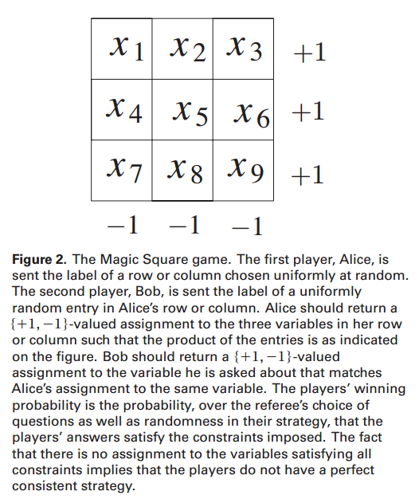

P/NP
PCP History
PCP Theorem begins at MIT in the early 1980s: The Knowledge Complexity of Interactive Proof Systems(Goldwasser, Micali, Rackoff)，文中给出如下定义：
定义 1：IP（Interactive Proofs）定义为一个验证者（verifier）和全能的证明者（prover）进行多项式轮交互，正确的论述一定通过 (“completeness”)，错误的论述会有至少1/2的概率不通过 (“soundness”)
独立于上述工作的Arthur-Merlin Games: A Randomized Proof System, and a Hierarchy of Complexity Classes(Babai, Moran)，定义如下：
定义 2：AM[k]是k轮的交互过程。
Babai证明了（定理 1）对任何常数k，AM[k]=AM[2]，因此AM[2]也被写作AM。AM[poly]和IP很相似，区别在于coin是否public，Goldwasser和Sipser很快证明了他们等价。
定义 3：Graph Non-Isomorphism是给定两个图的邻接表，判断他们是否同构
定理 2： Graph Non-Isomorphism是IP问题。（证明：随机重命名图，然后给prover判断是哪个）
定义 4：MIP是和多个独立Prover的交互问题。（Ben-Or, Goldwasser, Kilian, Wigderson, 1988）（他们还证明了多个Prover和两个Prover等价）
定理 3：$P^{井P}\subseteq IP$（Lund, Fortnow, Karloff, Nisan, 1990）
定理 4：IP=PSPACE（Shamir, 1990）
定理 5：MIP=NEXP（Babai, Fortnow, Lund, 1990）
人们试图给Verifier加限制，比如空间限制，Condon证明了NP是Verifier有对数空间和单向读权限的IP，另一个限制是时间，但是B-F-L-S证明了Prover用特定语言来写证明就可以在多项式时间内证明所有NP。最有趣的是同时限制Verifier的随机数数量和Proof的大小，其定义如下
定义 5：$PCP[r(n),q(n)]$是PCP系统，使用$O(r(n))$字节的Randomness，$O(q(n))$字节的Proof，并且completeness 1，soundness 1/2。
在这个定义下，$MIP=NEXP$的结果等价于$NEXP\subseteq PCP[poly, poly]$。B-F-L-S关于时间的限制的结论等价于$NP\subseteq PCP[polylog, polylog]$。
定理 6：$NP\subseteq PCP(f(n), f(n))$，其中$f(n)=log(n)log(log(n))$，进一步，MAX-CLIQUE无法近似除非$NP\subseteq DTIME(n^{log(log(n))})$（FGLSS，FOCS，1991）
看上去$NP\subseteq PCP[log(n),log(n)]$是必然的，最终在1992年得到证明，query的数量约$10^6$
定理 7： $NP\subseteq PCP[log(n), log(n)]$，实际上$NP\subseteq PCP[log(n), log(n)^{.5+\epsilon}]$（Arora，Safra，1992）
定理 8（PCP定理）：$NP\subseteq PCP[log(n), 1]$（Arora-Lund-Motwani-Sudan-Szegedy，1992）
算子代数
Connes‘ embeddings conjecture（CEC）是算子代数最有名的开放问题之一，猜测任意有限冯诺依曼代数可以被有限维矩阵代数接近。
CEC有很多等价形式，其中之一是Tsirelson’s Problem，这个问题从Einstein-Podolsky-Rosen的问题出发，定义希尔伯特空间H，一个Projection valued measure（PVM）定义为H上投影的有限集合$\{P_1,…,P_m\}$满足$\sum P_i=Id$。对于有限指标集$X,Y,A,B$，Tsirelson考虑凸子集$Q_{ABXY}^C$（commuting）和$Q_{ABXY}^S$（spatial），定义如下
Tsirelson起初声称两者相等，但很快他把两者是否相等重新设定为开放问题。约25年后Slofstra证明了两者不等，但$\bar{Q_{ABXY}^S}=Q_{ABXY}^C$是否成立依旧开放。Ozawa证明了这个问题和CEC等价，这样将这个问题从量子力学领域转移到算子代数领域。
Tsirelson的问题的提出源自量子力学的entanglement现象。在E-P-R之后30年，Bell提出Bell实验，假设两个物理系统从任意状态初始，假设两个系统可以分别被有限集合$A^x,x\in X$和$B^y,y\in Y$度量，假设通过度量产生$(a,b)\in A\times B$，定义correlation set为包含所有$p_{abxy}$的凸集$K_{ABXY}\subseteq [0,1]^{A\times B\times X\times Y}$。Bell实验需要联合可测性，冯诺依曼证明这等价于$A^x\in O_A$和$B^y\in O_B$可交换。谱分解为$A^x=\sum_a\lambda_aA_a^x$和$B^y=\sum_b\mu_bB_b^y$，然后可以定义观测到$(a,b)$的概率，可以证明这是well-defined分布族，也即上文定义的$Q_{ABXY}^C$。Bell实验可以表示为nonlocal game。
从IP到MIP（上文PCP已详述）Babai证明了$NEXP\subseteq MIP$，进而有PCP定理。
一个nonlocal game有一个Verifier和两个Prover（这里也是Player），每次Verifier从$X\times Y$中选择一对问题$(x,y)$，然后分别发送给两个Prover，得到$a\in A$和$b\in B$两个答案，然后评价$V(a,b|x,y)\in \{0,1\}$。如果V=1，那么认为Prover获胜，否则他们失败。Verifier的问题分布$\pi$已知，V公开，Player可以有预先设定的策略。Player的两个策略函数$f_A:X\times \Omega\to A$，$f_B:Y\times\Omega\to B$，在经典意义下
Spatial value
Commuting value
$\omega(G)\leq \omega^S(G)\leq\omega^C(G)$，上文Tsirelson问题等价于$\omega^S(G)=\omega^C(G)$
我们首先证明$\omega(G)<\omega^S(G)$，以Magic Square(MS)为例，游戏规则如下

可以得到classical value $\omega(MS)=17/18<1$，而spatial value $\omega^S(MS)=1$
一系列复杂性理论提出了技术来抵抗Prover对entanglement的利用。现在我们知道任何证明系统都可以使得entanglement不再有用，并得出结论$NEXP=MIP\subseteq MIP^*$。前一半等号的证明由Babai等给出。Natarajan和Wright证明了MIP严格大于NEXP，并且$NEEXP\subseteq MIP^\$。
From below，$O(|X|log|A|+|Y|log|B|)$在多项式时间内，所以$MIP\subseteq NEXP$。在entanglement的情况下，对固定维数d，可以找到一连串有限网络$N_1\subseteq … \subseteq N_k\subseteq …$，$N_k$的大小为$k^{O(d^2)}$，那么对d维的任意策略，有$N_k$中的策略和其误差在$1/k$。令$\omega_{\leq n}^S$表示$d,k\leq n$时$N_k$在d维下的最高准确率。那么$\{\omega_{\leq n}^S\}$是个有界非减数列，并收敛到Spatial Value $\omega^S(G)$。这里Commuting value并没有有限维逼近。
From above，有一种”dual approach”，最简单的方法就是用一个系数$\alpha_{abxy}$代替$<\phi,A_a^xB_b^y\phi>$，然后考虑其最大值，当然这回极大的高估，所以可以通过引入限制来修正，比如对任意x,y，系数对a,b求和为1，又如增加层次性限制，引入了形如$<\phi,(A_{a_1}^{x_1}B_{b_1}^{y_1}A_{a_2}^{x_2}…B_{b_k}^{y_k})\phi>$，然后考虑在所有乘积长度小于等于n的约束下的最大值，得到非降数列$\{\omega_{\leq n}^C\}$，它收敛到$\omega^C(G)$。
如果$\bar{Q^S}=Q^C$，现在考虑MIP中的问题L，这意味着有方法可以将问题的实例转换为$G=\{\pi(x,y)V(a,b|x,y)\}$，如果是正例，$\omega^S(G)$接近1，否则会小很多。执行G的算法，可以发现任何L的成员可以被可停机的算法决定，这就是说明$MIP\$是decidable。Slofstra证明了如果没有2/3-1/3 promise，那么$\omega^S(G)=1$是undecidable，这样就没有finite gap $\delta$使得下界达到$1-\delta$。
2020年1月已经证明了$MIP^*=RE$